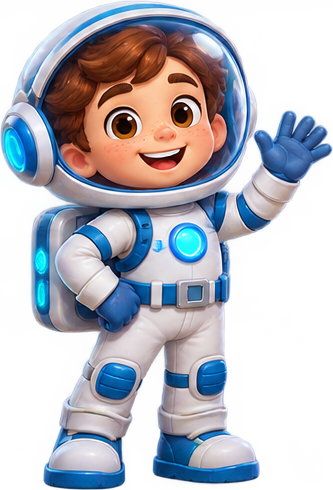
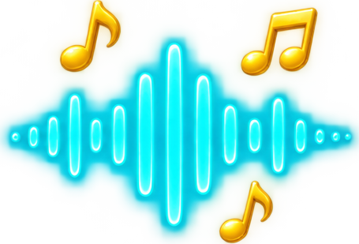
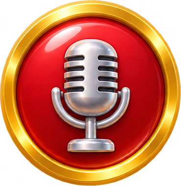

<!doctype html><html lang="pl"><meta charset="utf-8"><meta name="viewport" content="width=device-width,initial-scale=1">
<title>Pisanie po śladzie</title>
<link rel="stylesheet" href="../../learning92.css?v=92"><script>window.TRAINING139_ASSETS={"grafiki/fala_dzwiekowa.png": "../../space132/fala_dzwiekowa.png", "grafiki/tlo.png": "../../space132/tlo.png", "grafiki/gwiazda.png": "../../space132/gwiazda.png", "grafiki/rakieta_przezroczysta.png": "../../space132/rakieta_przezroczysta.png", "grafiki/mikrofon.png": "../../space132/mikrofon.png", "grafiki/astronauta.png": "../../space132/astronauta.png", "grafiki/skrzynia.png": "../../space132/skrzynia.png", "grafiki/robot.png": "../../space132/robot.png"};</script><script src="../frame-bridge.js?v=140"></script><style>
*{box-sizing:border-box}body{margin:0;color:#f4f9ff;background:#081739 url(../../space132/tlo.png) center top/cover fixed;font:16px system-ui}main{max-width:690px;margin:auto;padding:20px 16px}h1{margin:12px 0;color:#ffe08b;font-size:clamp(29px,7vw,48px)}header,.row,.choices,.slots{display:flex;align-items:center;gap:10px;flex-wrap:wrap}header{justify-content:space-between}header img{width:58px}button,select{min-height:44px;padding:8px 13px;font:inherit;font-weight:700;color:white;background:#203e71;border:2px solid #76c8fa;border-radius:12px;cursor:pointer}button:disabled{opacity:.55;cursor:default}button:focus-visible,select:focus-visible{outline:3px solid gold}.gold,.slots span{background:linear-gradient(#ffe9a0,#e9ad47);color:#192342;border-color:#ffdc82}.track{height:12px;margin:17px 29px 22px 12px;background:#1d3964;border:1px solid #6bc6ff;border-radius:20px;position:relative}.track img{position:absolute;top:50%;transform:translate(-50%,-50%);width:46px;transition:left .4s}.track .chest{left:100%;width:36px}.track .ship{left:var(--done,0%);z-index:1}.fill{height:100%;width:var(--done,0%);border-radius:20px;background:linear-gradient(90deg,#5de6ff,#ffdc78);transition:width .4s}.guide{display:flex;align-items:center;gap:13px;margin:10px 0}.guide img{width:100px;height:105px;object-fit:contain}.guide p{padding:12px;background:#e5f7ff;color:#14264b;border-radius:14px;font-weight:bold}.panel{background:#122852ef;border:2px solid #79d4ff;border-radius:23px;padding:16px;box-shadow:0 0 15px #52c8fb43}h2{margin:0 0 12px}.choices>div{flex:1;min-width:65px;display:grid;gap:5px}.choices button:first-child{font-size:26px}.slots{margin:10px 0;justify-content:center}.slots span{border:2px solid #ffdc82;border-radius:12px;min-width:52px;padding:7px;text-align:center;font-size:26px;font-weight:bold}.slots span:empty{background:#081d49;border:2px dashed #92d8ff}.slots span:empty:before{content:'·';color:#b8ddff}.picture{font-size:70px;text-align:center}.bad{border-color:#ffcf70;background:#684b38}.good{border-color:#acffd1;background:#216355}.message{min-height:24px;margin:12px 0}.wave{display:none;width:58px!important;position:absolute;left:0;transform:translateY(32px)}.listening .wave{display:block;animation:pulse .5s infinite alternate}.guide{position:relative}@keyframes pulse{to{opacity:.5;scale:.85}}.help{margin-top:14px}.mic{border:0;background:none;padding:0}.mic img{width:51px;display:block}canvas{display:block;width:min(100%,400px);height:auto;aspect-ratio:1;margin:12px auto;border-radius:15px;background:#e3f3ff;touch-action:none}.glow{animation:pulse .35s alternate 2}[hidden]{display:none!important}@media(prefers-reduced-motion:reduce){*{animation:none!important;transition:none!important}}
</style><style>#filter,#scene,#random{display:none!important}body .lg92-trace-board{background:#fff9e9}body [data-trace-start]{fill:#ffc83d;filter:drop-shadow(0 0 3px #f0b800)}.slots.complete{box-shadow:0 0 20px #79edb1}.training139-paused{pointer-events:none;filter:blur(3px)}body.training139-paused *{animation-play-state:paused!important}</style>
<main><header><button id="back">← Od nowa</button></header><h1>Pisanie po śladzie</h1>
<div id="count"></div><div class="track" aria-hidden="true"><div class="fill"></div></div>
<div class="guide"><p id="guide">Poprowadź linię od świecącej kropki.</p></div>
<section class="panel"><h2 id="heading"></h2><div id="play"></div><p class="message" role="status"></p></section>
<div class="row help"><button id="ai">Zapytaj nauczyciela AI</button><button id="mic" class="mic" aria-label="Zadaj pytanie przez mikrofon"></button></div>
<p id="details" role="status"></p></main>
<script type="module">import {mountTrace92} from "../../learning-trace92.js?v=95";
const root=document.querySelector("#play");document.querySelector("#heading").textContent="Pisz po śladzie";mountTrace92(root,{speak:Training139.speak,onFinish:()=>{Training139.save({glyph:root.querySelector("select").value,completed:true});Training139.advance();}});Training139.onSkip=()=>root.querySelector("[data-trace-act=next]").click();</script></html>
